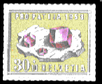
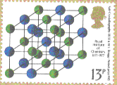
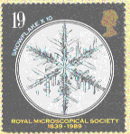
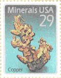

Crystals take some time to grow, so while they are growing you may like to try some of these activities:
1. Jewels Colouring Competition
Click here to see a page of jewels,
print the page and then you are ready for the following activities:
Colour in the 6 crystals, and then look in a book of minerals or jewellery to find out more about each jewel, for example:
2. Make your own garnet
Cut out the plane shape of a
garnet carefully,
use glue or sticky tape to
fix the tabs on to the opposite faces to make your own three dimensional
model.
Try stacking up several models to see whether they make a
completely solid block with no gaps between them. Can you think of any
other shapes which can fill space in this way?
3. Crystals on postage stamps
Many people collect postage stamps, common themes are birds, animals,
modes of transport, less common are minerals and crystals. Make a list of
stamps related to crystals, including the country of issue, date, topic, etc
. Here are some to start with.




Which country issued them?
When?
What crystals are they?
Why were they issued?
4. Make a list of Nobel prize winners associated with crystallography
What are Nobel prizes? Who awards them? For what achievements? How often? Make a list of those who have won prizes for work associated with crystals. There is no prize for crystallography, but prizes associated with other subjects, chemistry, physics and medicine, have been given for work on the structure of crystals.
5. Surf the Internet to look for sites associated with crystals
Try searching for other sites on the World Wide Web associated with crystals.
Sites may have images of natural crystals, or you can learn how crystals are
essential to many modern industrial products.
Find out how a quartz watch works, how liquid crystals are used in some
computing screens, and many other exciting things.
Please send comments on these activities or news of anything you find out,
particularly the details of any stamps issued or Internet site URLs you find
to the British Crystallographic Association, prefrably by email to the
Webmaster at the address below.
 Click here to return to BCA homepage
or here to return to the educational index page
Click here to return to BCA homepage
or here to return to the educational index page